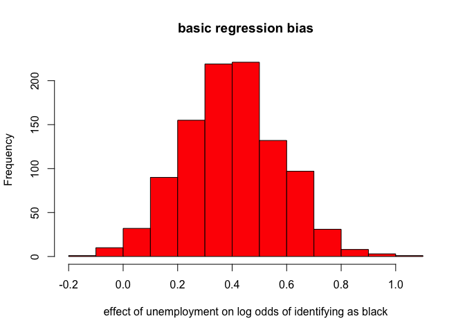
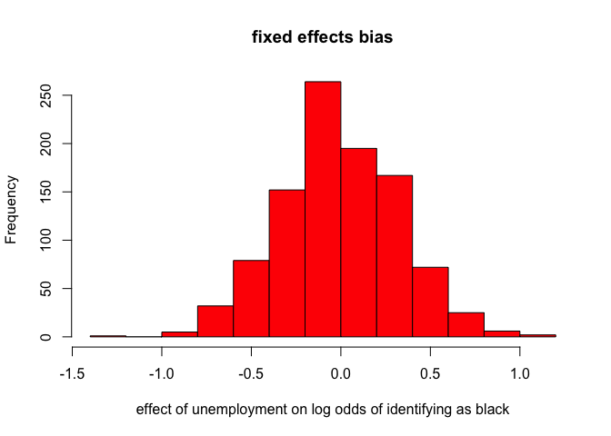

The most recent issue of the American Journal of Sociology contains a comment by Kramer, DeFina, and Hannon (KD&H) on Saperstein and Penner’s (S&P) article on racial fluidity as well as a response by Saperstein and Penner (there is also another comment by Richard Alba and colleagues, but the issues they raises are not the focus of this post). As a fellow co-author with Saperstein on another paper looking at racial fluidity on linked Census data from the late 19th and early 20th century, I have been aware of and following the debate between these scholars for some time. Prior to the comment’s publication, Andrew Gelman posted on the debate, and I posted a comment on that post with a link to an R simulation that I had put together to show more clearly the nature of the methodological issue that forms the bulk of KD&H’s criticism and how likely it might be to affect different types of models. I had largely put together the simulation for my own purposes in trying to sort out what was going on, but thought it might be useful for others to see, as well. Gelman then quoted my comment in a new post in which he invited Hannon to respond.
So that pretty much takes us to the present. Now that the comment is published (and now that I have switched over to markdown and jekyll for posting to my website), I wanted to use this post to more clearly explain what the simulation is doing and what I think we can take from it. The post here is not intended to be a general defense or attack on any of the scholars involved. In full disclosure, I happen to be good friends with both Saperstein and Penner. However, I happen to also be a scholar interested in both racial fluidity and racial inequality and so getting this right is what I care about most. My post here is also not intended to address all of the criticisms by KD&H nor the responses by S&P. Interested readers should read both the comments and the response for a fuller picture of the debate.
The Models
S&P use panel data where a measurement of race is taken at multiple time points and the race response occasionally varies within individuals over time. This is the racial fluidity that S&P identify. In particular, they are interested in whether this fluidity is associated with changes in social status (e.g. employment, occupational prestige, ever incarcerated). The fundamental insight here (and why the original article generated so much buzz) is that the causal direction of the association between race and social status may in fact run both directions, both of which serve to reinforce the racial hierarchy. S&P actually have multiple papers on this topic, using different data sets and measures of social status. The AJS article uses NLSY79 data and measures social status by characteristics such as unemployment, poverty, marriage, and incarceration. However, regardless of the measure of social status, they employ two modeling approaches to look at the association. First, they run a straight regression model in which racial identification in the later period is predicted by social status in the later period and racial identification in the earlier period.
\[logit(P(black_{i2}))=\beta_0+\beta_1(black_{i1})+\beta_2(status_{i2})\]
The idea here is that we can see the effect of social status on the probability of being identified as black in time 2, even while controlling for whether the respondent was identified as black or not in time 1. Controlling for racial identification at time 1 is crucial because otherwise the association between being black in time 2 and social status in time 2 will almost certainly reflect the racial inequality (e.g. black people are more likely to have ever been incarcerated) rather than the racial fluidity that S&P are interested in.
An alternative approach uses a fixed effects panel model.
\[logit(P(black_{it}))=\alpha_i+\beta_1(status_{it})\]
Here the \(\) fixed effects allow S&P to look at within-person change. So, \(_1\) tells you how a change in social status changes the log-odds that a person will by identified (or self-identify, depending on the measure) as black. Because the fixed effects model controls for all time constant variables, the model effectively controls for phenotypical differences (e.g. skin tone, hair texture) between individuals that might affect both how they identify or are identified and how they are treated.
KD&H’s primary criticism is that the results of S&P’s analysis could easily be driven by measurement error. I feel that they are somewhat vague about the source of such measurement error (a point I will return to below as it forms a significant part of Hannon’s response on Gelman’s blog to my simulation). Lets assume for the moment that we are simply talking about either interviewers or respondents (depending on the data collection format) literally checking the wrong box relative to the box they meant to check or a transcription error when the raw data is compiled. I think everyone can agree that these situations truly would constitute measurement error as the intention of the person giving the response in that particular time and place is not accurately recorded.
KD&H describe a simulation in their comment which seems to show that even in the absence of real effects, a measurement error in race reporting at time 2 of 1.6% can still produce large effects of the size that S&P report. S&P respond by (correctly) pointing out that the simulation should allow for a similar degree of measurement error for race reporting at time 1. When S&P make this correction, the effects that KD&H report are roughly cut in half and substantially below most of the effects that S&P report.
Neither set of authors provide any real discussion of why such a large bias might be produced in the face of such a small amount of measurement error. I can be a bit thick sometimes and it was not immediately clear to me how such measurement bias was produced. So, I built the following simulation mostly to figure it out for myself. If at this point, you just want the tl;dr version, the conclusion is that measurement error could potentially create association in the basic regression model that S&P run, but not the fixed-effects model, because the bias operates in the between-person comparison not the within-person comparison.
The Simulation
Setting up the basic dataset
In order to run the simulation, I first constructed a fake dataset with two time points and no fluidity. There are two groups, A and D, where D is the disadvantaged group (10% of the population). I refer to the social status characteristic as unemployment, but really it could be any dummy variable where 1 indicates a negative social status. I set the unemployment rate for A at 10% and for D at 20%. All of these parameters are adjustable and I have played around with different values. The conclusions seem pretty robust for realistic values.
sampleSize <- 10000
#two groups, A and D, for advantaged and disadvantaged. What proportion are D?
propD <- 0.1
#base unemployment rate for A
baseUnempA <- 0.1
#ratio of unemployment rate for D
ratioUnemp <- 2
race.time1 <- factor(c(rep("A",round((1-propD)*sampleSize)),
rep("D",round(propD*sampleSize))))
#because we start with no fluidity and no measurement error
#race.time2 is identical
race.time2 <- race.time1
#assume double the unemployment rate for Ds as As (20% and 10% respectively)
unemp.time1 <- c(rep(1,round((baseUnempA)*(1-propD)*sampleSize)),
rep(0,round((1-baseUnempA)*(1-propD)*sampleSize)),
rep(1,round((baseUnempA*ratioUnemp)*(propD)*sampleSize)),
rep(0,round((1-(baseUnempA*ratioUnemp))*(propD)*sampleSize)))
baseData <- data.frame(race.time2,race.time1,unemp.time1)
#Create unemp.time2 by randomly redistributing unemployment within each race group.
#This should give us the same distribution of unemployment by race in each time period
#and of course there can't be a correlation with switching because there is no switching
#in the real data.
baseData$unemp.time2 <- rep(NA, nrow(baseData))
temp <- baseData$unemp.time1[baseData$race.time1=="A"]
temp <- temp[sample(1:length(temp),length(temp),replace=FALSE)]
baseData$unemp.time2[baseData$race.time1=="A"] <- temp
temp <- baseData$unemp.time1[baseData$race.time1=="D"]
temp <- temp[sample(1:length(temp),length(temp),replace=FALSE)]
baseData$unemp.time2[baseData$race.time1=="D"] <- tempPerform some checks to make sure everything lines up as expected.
summary(baseData)## race.time2 race.time1 unemp.time1 unemp.time2
## A:9000 A:9000 Min. :0.00 Min. :0.00
## D:1000 D:1000 1st Qu.:0.00 1st Qu.:0.00
## Median :0.00 Median :0.00
## Mean :0.11 Mean :0.11
## 3rd Qu.:0.00 3rd Qu.:0.00
## Max. :1.00 Max. :1.00table(baseData$race.time1, baseData$race.time2)##
## A D
## A 9000 0
## D 0 1000tapply(baseData$unemp.time1, baseData$race.time1, mean)## A D
## 0.1 0.2tapply(baseData$unemp.time2, baseData$race.time2, mean)## A D
## 0.1 0.2Introducing measurement error
Now, I set up a monte carlo simulation in which I introduce measurement error in the race measurement and run both types of models outlined above to see if the results show an association between race and social status.
First, I set up some parameters for the simulation. The boolean variable dvError can be toggled so FALSE to more closely follow the KD&H simulation which only induced error in race at time 1. I have it toggled to TRUE here, but in other runs, I confirm S&P’s finding that when error is only induced in race at time 1, the reported bias is about double what it should be.
#reporting error percent
errorProp <- 0.01
#include errors on DV?
dvError <- TRUE
#number of simulations
nSim <- 1000Next, I induce the error in each simulation and estimate the key coefficient for each model.
library(survival)
coefs.basic <- NULL
coefs.fixed <- NULL
tabAA <- NULL
tabDD <- NULL
tabAD <- NULL
tabDA <- NULL
for(i in 1:nSim) {
errorData <- baseData
#race.time2
if(dvError) {
errors <- sample(1:nrow(errorData), round(errorProp*sampleSize), replace=FALSE)
temp <- errorData$race.time2[errors]
temp2 <- rep(NA, length(errors))
temp2[temp=="A"] <- "D"
temp2[temp=="D"] <- "A"
errorData$race.time2[errors] <- temp2
}
#race.time1
errors <- sample(1:nrow(errorData), round(errorProp*sampleSize), replace=FALSE)
temp <- errorData$race.time1[errors]
temp2 <- rep(NA, length(errors))
temp2[temp=="A"] <- "D"
temp2[temp=="D"] <- "A"
errorData$race.time1[errors] <- temp2
#get the mean unemployment by each group of switchers and stayers
tab <- tapply(errorData$unemp.time2, errorData[,2:1], mean)
tabAA <- c(tabAA, tab[1,1])
tabDD <- c(tabDD, tab[2,2])
tabAD <- c(tabAD, tab[1,2])
tabDA <- c(tabDA, tab[2,1])
model <- glm(I(race.time2=="D")~unemp.time2+I(race.time1=="D"), data=errorData,
family=binomial)
coefs.basic <- c(coefs.basic, model$coef["unemp.time2"])
panelData <- rbind(data.frame(race=errorData$race.time1,
unemp=errorData$unemp.time1,
person=1:nrow(errorData),
time=rep(1, nrow(errorData))),
data.frame(race=errorData$race.time2,
unemp=errorData$unemp.time2,
person=1:nrow(errorData),
time=rep(2, nrow(errorData))))
#clogit in the survival library will fit an FE logit
model <- clogit(I(race=="D")~unemp+strata(as.factor(person)), data=panelData)
coefs.fixed <- c(coefs.fixed, coef(model)["unemp"])
}The simulation results
First, lets take a look at the results for the basic regression models with a control for prior racial identification.
hist(coefs.basic, col="red",
xlab="effect of unemployment on log odds of identifying as black",
main="basic regression bias")
summary(coefs.basic)## Min. 1st Qu. Median Mean 3rd Qu. Max.
## -0.1781 0.2799 0.3959 0.3984 0.5158 1.0430There is evidence of substantial bias here as a result of measurement error. I will get more into why this happens below, but first lets look at the results for the fixed effects model.
hist(coefs.fixed, col="red",
xlab="effect of unemployment on log odds of identifying as black",
main="fixed effects bias")
summary(coefs.fixed)## Min. 1st Qu. Median Mean 3rd Qu. Max.
## -1.350000 -0.223100 0.000000 -0.003183 0.211900 1.065000There is no systematic bias from the measurement error in the fixed effects model, although it does produce some substantial noise in the estimate. So, the fixed effects model seems to be robust to this form of measurement error, while the non-fixed effects model is not.
What is driving the bias?
By looking at the average unemployment among all four types of people (AA non-switchers, DD non-switchers, AD switchers, and DA switchers), we can get a clue as to the source of the bias.
tab <- cbind(c(mean(tabAA),mean(tabDA)),c(mean(tabAD),mean(tabDD)))
rownames(tab) <- c("A","D")
colnames(tab) <- c("A","D")
tab## A D
## A 0.1000189 0.1087715
## D 0.1081952 0.2000196Because switchers are drawn randomly from the total population, their average unemployment rate will equal the population average in both cases of switching. The average unemployment rate of stayers on the other hand is very close to the group-specific averages (at least when the error rate is small). Thus when you compare AD switchers to AA stayers on the first row, AD switchers will have a higher unemployment rate. Similarly, when comparing DD stayers to DA switchers (the second row), the DA switchers will have a much lower unemployment rate. This is what produces the bias.
This bias disappears in the fixed-effects model because it only exists in the between-person comparisons (i.e. AA stayers to AD switchers and DD stayers to DA switchers). By definition, fixed-effects models only estimate within-person comparisons. Thus, the fixed-effects model is robust to this kind of bias.
I should also note that this table helps to illuminate why only inducing errors for race at time 1 inflates the bias significantly. Here is the output of that table when I ran this simulation with dvError set to FALSE.
## A D
## A 0.10001088 0.1994540
## D 0.09881213 0.1999546Both types of switchers have unemployment rates that are the same as the race-specific unemployment rates of their group at time 2, rather than the population wide average. Therefore, the log odds ratio will just mirror the log-odds ratio in unemployment between the A and D groups, generally.
What is measurement error?
Given the results here, a key question is how big would we expect this measurement error to be and where does it come from? As I noted above, recording and/or transcription errors could clearly be classed as measurement error. I said in my original simulation that we should think of these errors as being produced at random in the data (I referred to this as “MCAR”“, although technically it should be ECAR, I suppose) and that is the way the errors are modeled in the simulation. In Hannon’s response on Gelman’s blog, he says:
I don’t agree with his suggestion that accounting for measurement error in racial fluidity studies means a total focus on missing completely at random because “Anything else gets into the tricky question of what measurement error really means anyway on a variable with no real true response.” I think non-random measurement error matters too in this context.
I was initially very confused by this response. Was Hannon suggesting that changes in the race response that were correlated with other variables (i.e. not completely at random) should be thought of as “non-random measurement error?” That would be odd, considering this is exactly what S&P were trying to measure. It was only after I read the published KD&H comment that I realized they were suggesting something else. KD&H argue that the significant level of race reporting inconsistency over time is “not due to racial fluidity but rather a flawed classification scheme.” (pg. 235) Alba et. al. make a similar point. More specific to the issue of non-random measurement error, KD&H argue in footnote 6 that:
As S&P note, in 1979, respondents chose from a list of 28 ethnicities/nationalities, but in 2002 they chose from only five racial groups and had a separate question about Hispanic ethnicity. This dramatic change in survey questions could obviously introduce significant error in longitudinal social science models. Such error need not be randomly distributed.
It is absolutely true that the survey design will affect the degree of inconsistency in race reporting over time, but to think of this as measurement error is problematic. On a basic level, this kind of process does not correspond to the simulation that KD&H themselves conducted. But on a more fundamental level, its a wrong-headed way to think about the process of racial identification and classification (as well as classification by gender, sexuality, social class, etc.) and reveals a superficial attachment to the notion of socially constructed identities. The disagreement here really gets to the core of the issue where I feel people involved in the debate are talking past each other. We are not measuring someone’s years of education or how many push-ups they did last week, both of which have an objectively true value. We are measuring a concept that all parties agree is socially constructed and subjective. The only measurement error that can logically exist is if when confronted with a set of categories, a person’s intent in that moment relative to those categories is incorrectly recorded. That a person’s response would be different with a different set of categories is not evidence of measurement error. At the risk of a lack of humility, let me quote myself on this topic:
Given this implicit correspondence between race and ancestry, it may be useful to make comparisons between the two responses by treating each response as a subjective assessment of a person’s essentialized identity. The goal is not to judge the accuracy of either report, which would be a quixotic task, but rather to understand the correspondence in reporting on two subjective responses in order to draw better conclusions about processes of identification, the nature of racial boundaries, and even racial inequality.
I was referring in this quote to a comparison between race and ancestry reporting on the Census and ACS, but the basic point applies equally to this situation. What KD&H see as a fundamental problem – that poor survey design induces inconsistency – is actually a virtue. Take the case of Hispanics. Both KD&H and Alba et. al. point out that the high level of inconsistency for Hispanics is driven by the choice set of white/black/other that respondents faced for most waves of the NLSY79. Many Hispanics vacillated between white and other. Their point here is accurate, but is largely irrelevant to the findings of S&P. If declining social status makes Hispanics more likely to choose “other” compared to “white”, then we have learned something. In this sense, the poor survey design can be exploited to draw interesting conclusions. Its not a bug, its a feature.
What now?
Given the results of the simulation, one suggestion might be that we move away from the basic regression model approach in future work toward fixed-effects models that are more robust to potential measurement error. This is a suggestion that KD&H also make.
I think there is also potential for more advanced models here. Both KD&H and Alba et. al. suggest that the model should really only be applied to individuals who are racially ambigious (i.e. that have the potential to be classified in multiple ways). Gelman in his blog post says “For example, I’ll never be counted as “black” no matter how many times I go to jail.” Gelman suggests this might be a source of bias, but I have long thought that S&P are probably underestimating the effect of social status change on racial reporting change, because they are averaging the effects across individuals who vary substantially in their probability to be differently classified. KD&H and Alba et. al. suggest running the models on subsets that are believed to be more racially ambigious (e.g. latinos, multiracial individuals). I think this is an inefficient and overly simplistic approach. I think what we are after here is something like a “treatment on the treated” effect - the effect of switching on those who actually switched, except in this case the switching is the outcome, not the treatment. Some of the innovations in causal modeling on panel data may help provide more clarity in the future.